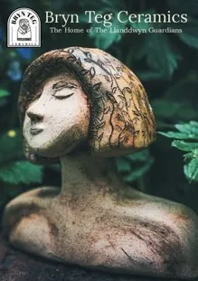

Bryn Teg Ceramics

Mae gwaith stiwdio Bryn Teg Ceramic wedi’u hysbrydoli gan fythau a hud, llên gwerin a’r byd naturiol. Cartref Gwarcheidwaid Llanddwyn.
Mae fy ngherfluniau yn gwahodd rhyfeddod a chreadigrwydd, cwestiynau a naratifau
Bryn Teg Ceramic’s studio creations are inspired by Myth & Magic, Folklore & The Natural World. Home of the Llanddwyn Guardians.
My sculptures invite wonder and creativity, questions & narratives.
07952 756429
www.brynteg-ceramics.co.uk
BRYN TEG CERAMICS, LÔN CAPEL, DWYRAN, LL61 6AU
Wedi’i leoli yn Dwyran, De Ddwyrain Ynys Môn. Anelwch ar hyd prif lôn Lôn Capel. Mae’r stiwdio gartref a’r ardd ar ochr chwith y bwthyn Bryn Teg gyferbyn â’r Hen Fecws (Neuadd Eglwys Sant Ceinwen) LL61 6AU
Located in Dwyran, South East Anglesey. Head along the main lane of Lon Capel. The home studio space & garden is left-side of cottage Bryn Teg opposite Yr Hen Fecws (St Ceinwen’s Church Hall) LL61 6AU.